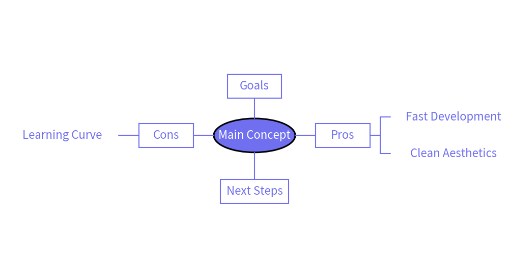
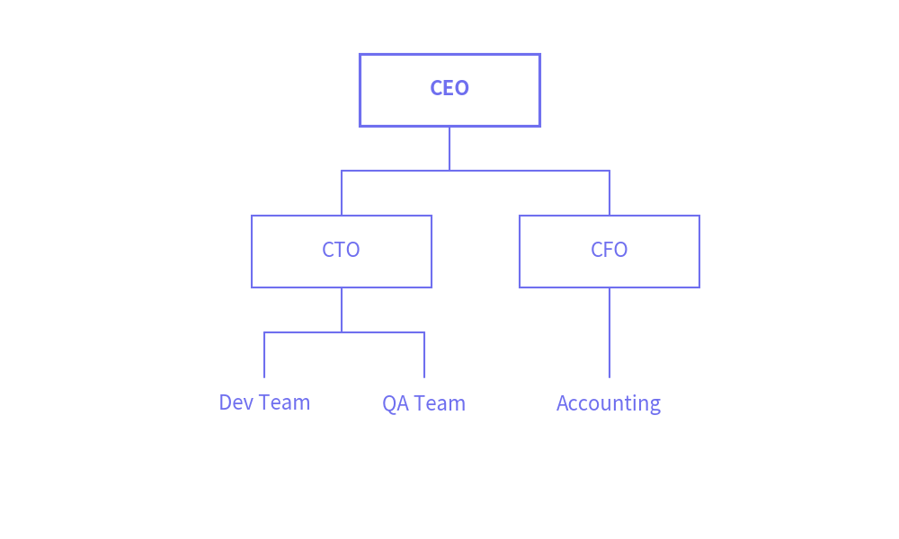
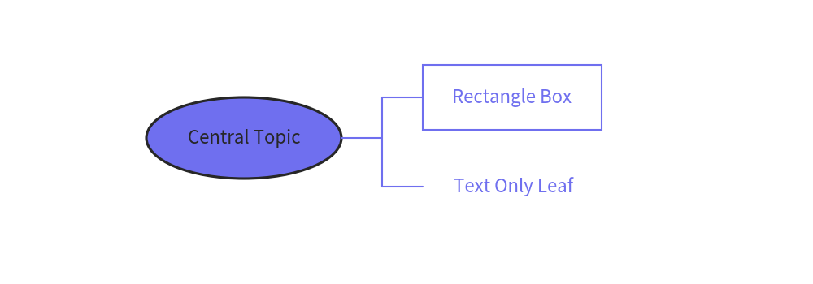

=============
MindMap
Class MindMapNode draws hierarchical mind map and tree diagrams.
It supports:
- 3 node shapes:
"rectangle"(rounded corners supported),"oval", and"none"(text-only). - 4 branch directions:
"bottom","top","left", and"right". - Multi-directional branching from a single root node (classic mind map layout).
- Clean orthogonal right-angled connections via automatically placed junctions.
- Root-centered positioning for precise coordinate control.
- Fine-grained position tuning using
xy_shift.
Here is an example of a multi-directional mind map:
from drawlib.canvas import config, save
from drawlib.smartarts import MindMapNode
config(width=150, height=80)
root = MindMapNode(
"Main Concept",
shape="oval",
size=(24, 10),
style="bold",
textstyle="white",
children=[
# Right branches
MindMapNode(
"Pros",
branch="right",
shape="rectangle",
size=(16, 7),
style="solid",
line_length=6,
children=[
MindMapNode("Fast Development", shape="none"),
MindMapNode("Clean Aesthetics", shape="none"),
],
),
# Left branches
MindMapNode(
"Cons",
branch="left",
shape="rectangle",
size=(16, 7),
style="solid",
line_length=6,
children=[
MindMapNode("Learning Curve", shape="none"),
],
),
# Top branch
MindMapNode(
"Goals",
branch="top",
shape="rectangle",
size=(16, 7),
style="solid",
),
# Bottom branch with custom shift
MindMapNode(
"Next Steps",
branch="bottom",
shape="rectangle",
size=(20, 7),
style="solid",
xy_shift=(0, -2),
),
],
default_line_length=6,
)
root.draw(xy=(75, 40))
save()

Quick Start: Organizational Hierarchy (Bottom-up & Top-down)
MindMapNode can also be used as a top-down or bottom-up organizational hierarchy tree.
Specifying branch="bottom" on the root creates a standard top-down organization chart.
from drawlib.canvas import config, save
from drawlib.smartarts import MindMapNode
config(width=100, height=60)
root = MindMapNode(
"CEO",
shape="rectangle",
size=(20, 8),
style="solid_bold",
children=[
MindMapNode(
"CTO",
children=[
MindMapNode("Dev Team", shape="none"),
MindMapNode("QA Team", shape="none"),
],
),
MindMapNode(
"CFO",
children=[
MindMapNode("Accounting", shape="none"),
],
),
],
)
root.draw(xy=(50, 50), branch="bottom")
save()

Node Shapes
Each node can have one of three shapes:
"rectangle": A rectangular box. Supports corner rounding usingr."oval": An elliptical node. Ideal for the central root theme."none": Text-only node without border or background fill. Useful for leaf topics.
from drawlib.canvas import config, save
from drawlib.smartarts import MindMapNode
config(width=100, height=35)
root = MindMapNode(
"Central Topic",
shape="oval",
size=(24, 10),
style="bold",
textstyle="white",
children=[
MindMapNode("Rectangle Box", branch="right", shape="rectangle", size=(22, 8), style="solid"),
MindMapNode("Text Only Leaf", branch="right", shape="none"),
],
)
root.draw(xy=(30, 18), branch="right")
save()

Branch Directions
Nodes can branch in 4 directions:
"bottom": Branches downwards (Top-to-bottom hierarchy)."top": Branches upwards (Bottom-to-top hierarchy)."right": Branches towards the right (Standard mind map right side)."left": Branches towards the left (Standard mind map left side).
Children inherit their parent's branch direction unless explicitly overridden.
API Specification
MindMapNode()
Initializes a mind map node.
Args:
text(str): Text content displayed in this node.branch(Literal["bottom", "top", "left", "right"], optional): Branch expansion direction.shape(Literal["rectangle", "oval", "none"], optional): Shape of this node. Defaults to"rectangle".size(Tuple[float, float], optional): Size of the node as(width, height). Defaults to(20.0, 8.0).style(Union[str, Style], optional): Style for node shape fill and border.r(float, optional): Corner radius whenshape="rectangle".textstyle(Union[str, Style], optional): Style for text.linestyle(Union[str, Style], optional): Style for connecting lines.horizontal_margin(float, optional): Horizontal margin between sibling subtrees.vertical_margin(float, optional): Vertical margin between sibling subtrees.line_length(float, optional): Distance between parent and child hierarchy levels.xy_shift(Tuple[float, float], optional): Coordinate offset(dx, dy)to adjust node position.children(List[MindMapNode], optional): List of childMindMapNodeinstances.default_branch(Literal["bottom", "top", "left", "right"], optional): Default branch direction for descendants.default_shape(Literal["rectangle", "oval", "none"], optional): Default shape for descendants.default_size(Tuple[float, float], optional): Default size for descendants.default_style(Union[str, Style], optional): Default style for descendants.default_r(float, optional): Default corner radius for descendants.default_textstyle(Union[str, Style], optional): Default text style for descendants.default_linestyle(Union[str, Style], optional): Default line style for descendants.default_horizontal_margin(float, optional): Default horizontal margin for descendants.default_vertical_margin(float, optional): Default vertical margin for descendants.default_line_length(float, optional): Default line length for descendants.
draw()
Draws the mind map tree rooted at this node.
Args:
xy(Tuple[float, float]): The center coordinates (x, y) of this root node's box.branch(Literal["bottom", "top", "left", "right"], optional): Default branch direction for children. Defaults to"bottom".
© 2026 drawlib by Yuichi Ito. Released under the Apache 2.0 License.